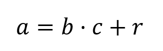

Dados dos números enteros “A” y “B” (con B distinto de 0), se dice que “a” divide a “b”, y lo escribimos como “a|b”, si existe un “c∈Z” tal que “b= ac”. También se dice que a es un factor o divisor de “b”, y que “b” es un múltiplo de “a”.
Dados dos números enteros “A” y “B” (con B distinto de 0), se dice que “a” divide a “b”, y lo escribimos como “a|b”, si existe un “c∈Z” tal que “b= ac”. También se dice que a es un factor o divisor de “b”, y que “b” es un múltiplo de “a”.
a = b q + r y 0 <= r < |b|
Al número “a” se le llama dividendo.
Al número “b” se le llama divisor.
Al número “q” se le llama cociente.
Al número “r” se le llama residuo.
Si queremos encontrar el resultado de dividir 35 entre 19 tenemos: 35 = 19 * 1 + 16, es decir que el cociente es uno y el residuo es 16
A = 35
B = 19
Q = 1
R = 16
En las matemáticas, se define el máximo común divisor (abreviado M.C.D) de dos o más números enteros al mayor número entero que los divide sin dejar residuo alguno. El máximo común divisor de dos números puede calcularse determinando la descomposición en factores primos de los dos números y tomando los factores comunes elevados a la menor potencia, el producto de los cuales será el MCD.
Encontrar el máximo común divisor de 48 y 68
48: 1,2,3,4,6,8,12,16,24,48
68: 1,2,4,17,34,68
El algoritmo de Euclides es un método antiguo y eficiente para calcular el máximo común divisor (MCD). Fue originalmente descrito por Euclides en su obra Elementos. El algoritmo de Euclides extendido es una ligera modificación que permite además expresar al máximo común divisor como una combinación lineal. Este algoritmo tiene aplicaciones en diversas áreas como álgebra, teoría de números y ciencias de la computación, entre otras.
Es una relación entre dos enteros a y b como sigue:
Calcular el MCD de 85 – 15
85 = 15 * 5 + 10 (Se empieza con el valor más alto entre ambos y siguiente el menor)
15 = 10 * 1 + 5
10 = 5 * 2 + 0
R// El máximo común divisor entre 85 y 15 es 5